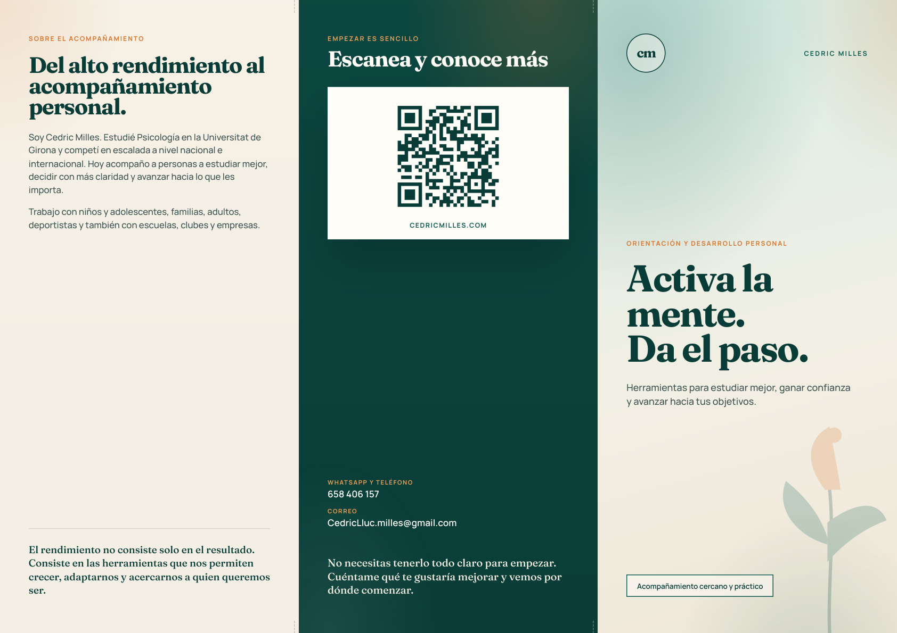
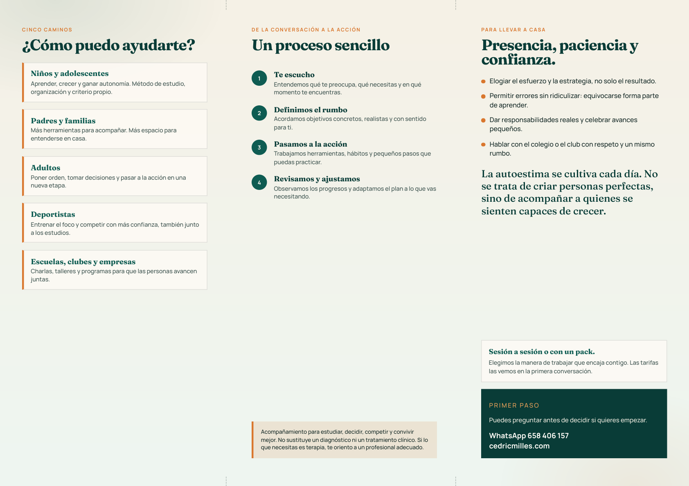

Cedric Milles · Orientación y desarrollo personal
Tríptico para imprimir
Dos caras en A4 horizontal, con la misma paleta de la presentación: menta, arena y acento naranja. Incluye QR a cedricmilles.com.


Cómo imprimirlo y plegarlo
- Abre el PDF e imprime en A4 horizontal, a doble cara, sin márgenes (o “ajustar al papel”).
- Si la impresora lo pide, elige voltear por el lado corto para que portada e interior coincidan.
- Deja el papel con el interior hacia arriba (las cinco áreas a la izquierda). Dobla el tercio izquierdo hacia el centro y, después, la portada Activa la mente encima, como una carpeta.
- Al cerrarlo verás la portada; al girarlo, el QR y los datos de contacto.